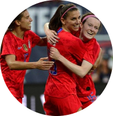

With Femisimply, it's easy to learn about feminism !

Femisimply is a mobile site designed to you discover or rediscover feminism in a simple way.
Discover a wealth of information about the women's cause through the content of the site!
Discover our different articles on feminism

The case of the American women's soccer team
Female soccer players in America are symbols of feminism. In 2019, an affair breaks out on the team. But what happened?
Feminist life by Emma Watson
Emma Watson has been considered a feminist a few years as a feminist reference. How does she influence the movement?
A film about feminism : I Feel Pretty
Cinema is a very good platform for platform to approach any subject. subject. How did I Feel Pretty manage to address the message of feminism?